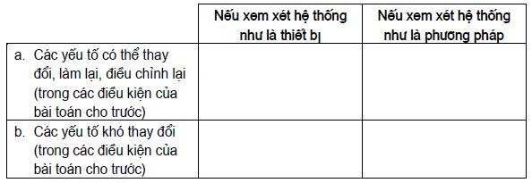

PHỤ LỤC: MỘT SỐ ARIZ QUA CÁC THỜI KỲ
Ở đây, người viết giới thiệu để bạn đọc tham khảo thêm một số ARIZ đã từng có trước đây. Cụ thể, đấy là các ARIZ 61, ARIZ 68, ARIZ 71, ARIZ 77. Xem xét những ARIZ này cùng với ARIZ 85 và ARIZ 85C đã trình bày trong các mục trước, bạn đọc có thể theo dõi sự cải tiến, phát triển của ARIZ.
Các nhận xét của người viết sẽ được trình bày ở cuối phụ lục.
ARIZ 61
1. Giai đoạn phân tích
Bước 2.1: Đặt bài toán.
Bước 2.2: Hãy tự hình dung kết quả lý tưởng cuối cùng (KLC).
Bước 2.3: Xác định xem cái gì cản trở đạt KLC (tức là đi tìm mâu thuẫn).
Bước 1.4: Xác định xem tại sao cản trở (tìm nguyên nhân của mâu thuẫn).
Bước 1.5: Xác định xem, trong những điều kiện nào sẽ không có cản trở (tức là đi tìm các điều kiện, ở đó mâu thuẫn không còn nữa).
2. Giai đoạn hành động
Bước 3.1:
Kiểm tra những thay đổi có thể trong chính đối tượng (tức là trong chiếc máy cho trước, quá trình công nghệ cho trước):
- Thay đổi kích thước.
- Thay đổi hình dạng.
- Thay đổi vật liệu.
- Thay đổi nhiệt độ.
- Thay đổi áp suất.
- Thay đổi tốc độ.
- Thay đổi màu sắc.
- Thay đổi sự sắp xếp các phần so với nhau.
- Thay đổi chế độ làm việc của các phần với mục đích tạo cho chúng tải lớn nhất.
Bước 3.2:
Kiểm tra khả năng phân chia đối tượng thành các phần độc lập:
- Tách ra phần “yếu”.
- Tách ra phần “cần và đủ”.
- Phân chia đối tượng thành các phần giống nhau.
- Phân chia đối tượng thành các phần khác nhau về chức năng.
Bước 3.3:
Kiểm tra những thay đổi có thể trong môi trường bên ngoài (đối với đối tượng cho trước):
- Sự thay đổi các thông số môi trường.
- Thay thế môi trường.
- Phân chia môi trường thành vài môi trường thành phần.
- Sử dụng môi trường bên ngoài để thực hiện các chức năng có ích.
Bước 2.4:
Kiểm tra những thay đổi có thể trong các đối tuợng kế cận (tức là những đối tượng cùng làm việc với đối tượng cho trước).
- Thiết lập mối quan hệ tương hỗ giữa những đối tượng trước đây độc lập với nhau mà những đối tượng này tham gia thực hiện một công việc.
- Loại bỏ một đối tượng nhờ việc chuyển giao các chức năng của nó cho đối tượng khác.
- Tăng số lượng các đối tượng, mà những đối tượng ấy hoạt động đồng thời trên một diện tích hạn chế, bằng cách sử dụng mặt tự do bên kia của diện tích.
Bước 2.5:
Nghiên cứu những đối tượng tiền thân từ các lĩnh vực khác của kỹ thuật (đặt câu hỏi: “Mâu thuẫn cho trước được khắc phục trong các lĩnh vực khác của kỹ thuật như thế nào?”).
Bước 2.6:
Quay trở lại (trong trường hợp tất cả các thủ thuật xem xét đều không thích hợp) bài toán xuất phát và mở rộng điều kiện bài toán, tức là chuyển sang bài toán khác chung hơn.
3. Giai đoạn tổng hợp
Bước 4.1:
Đưa vào sự thay đổi hình dạng của đối tượng cho trước (hình dạng mới phải tương ứng với bản chất mới của máy).
Bước 4.2:
Đưa những thay đổi vào các đối tượng khác có liên quan đến đối tượng cho trước.
Bước 4.3:
Đưa những sự thay đổi vào các phương pháp sử dụng đối tượng.
Bước 3.4:
Kiểm tra tính áp dụng của nguyên tắc sáng chế tìm ra để giải các bài toán kỹ thuật khác.
ARIZ 68
1. Lựa chọn bài toán
Bước 2.1:
Xác định mục đích cuối cùng của lời giải bài toán.
– Mục đích kỹ thuật của lời giải bài toán (Đặc trưng nào của đối tượng cần thay đổi?).
– Những đặc trưng nào của đối tượng rõ ràng không thể thay đổi khi giải bài toán?
– Mục đích kinh tế của lời giải bài toán (Những chi phí nào sẽ giảm đi nếu bài toán giải xong?).
– Các chi phí có thể cho phép khoảng bao nhiêu?
– Chỉ tiêu kỹ thuật–kinh tế nào cần làm tốt hơn?
Bước 2.2:
Kiểm tra xem, liệu có thể đạt được chính mục đích đó bằng việc giải bài toán “đường vòng”.
– Giả sử bài toán không giải được về mặt nguyên tắc. Lúc đó cần phải giải bài toán nào khác để vẫn nhận được kết quả yêu cầu?
– Chỉ tiêu kỹ thuật–kinh tế nào cần làm tốt hơn khi giải bài toán “đường vòng”?
Bước 2.3:
Xác định xem giải bài toán nào – bài toán khởi đầu hay bài toán “đường vòng” – có thể cho kết quả tốt hơn.
– So sánh bài toán khởi đầu với các khuynh hướng phát triển của lĩnh vực kỹ thuật cho trước.
– So sánh bài toán khởi đầu với các khuynh hướng phát triển của lĩnh vực kỹ thuật chủ đạo.
– So sánh bài toán “đường vòng” với các khuynh hướng phát triển của lĩnh vực kỹ thuật cho trước.
– So sánh bài toán “đường vòng” với các khuynh hướng phát triển của lĩnh vực kỹ thuật chủ đạo.
– So sánh bài toán khởi đầu với bài toán “đường vòng”. Thực hiện sự lựa chọn.
Bước 1.4:
Xác định các chỉ tiêu định lượng (vận tốc, năng suất, độ chính xác, kích cỡ…)
Bước 1.5:
Đưa vào các chỉ tiêu định lượng “những điều chỉnh về thời gian”.
Bước 1.6:
Làm chính xác các yêu cầu, tạo bởi các điều kiện cụ thể khi thực hiện sáng chế.
– Tính đến các đặc thù của việc áp dụng, nói riêng, mức độ cho phép sự phức tạp của lời giải.
– Tính đến quy mô áp dụng mang tính giả thiết.
2. Làm chính xác các điều kiện bài toán
Bước 3.1:
Làm chính xác bài toán, sử dụng các tài liệu về patent.
– Các bài toán gần với bài toán cho trước (theo các dữ liệu patent) giải như thế nào?
– Các bài toán giống bài toán cho trước trong lĩnh vực kỹ thuật chủ đạo giải như thế nào?
– Các bài toán ngược với bài toán cho trước giải như thế nào?
Bước 3.2:
Liệu có thể giải bài toán cho trước nếu như không tính đến chi phí?
Bước 3.3:
Bài toán thay đổi như thế nào, nếu giảm giá trị của chỉ tiêu yêu cầu hầu như đến zêrô?
Bước 2.4:
Bài toán thay đổi như thế nào, nếu tăng giá trị của chỉ tiêu yêu cầu lên mười lần?
Bước 2.5:
Bài toán thay đổi như thế nào, nếu như trình bày nó mà không sử dụng các thuật ngữ chuyên môn?
3. Giai đoạn phân tích
Bước 4.1: Xác định kết quả lý tưởng cuối cùng (trả lời câu hỏi: “Điều gì mong muốn thu được trong trường hợp lý tưởng nhất?”).
– Biểu diễn bằng sơ đồ, cái gì đã có và cái gì cần có (trong trường hợp lý tưởng).
– Đơn giản hóa sơ đồ cuối cùng đến giới hạn mà sơ đồ vẫn giữ được khả năng làm việc.
Bước 4.2:
Xác định cái gì cản trở việc thu được kết quả lý tưởng (trả lời câu hỏi: “Vướng mắc thể hiện ở chỗ nào?”).
Bước 4.3:
Xác định xem, tại sao lại cản trở (trả lời câu hỏi: “Nguyên nhân trực tiếp cản trở thể hiện ở chỗ nào?”).
Bước 3.4:
Xác định xem, trong những điều kiện nào thì không có gì cản trở thu kết quả lý tưởng (trả lời câu hỏi: “Trong những điều kiện nào thì sự cản trở biến mất?”).
– Liệu có thể làm thế nào để sự cản trở biến mất?
– Liệu có thể làm thế nào để sự cản trở tuy còn nhưng không gây hại?
Bước 3.5:
Thiết bị khắc phục sự cản trở phải như thế nào?
– Thiết bị này ở trạng thái kết hợp nào?
– Thiết bị này thay đổi như thế nào trong quá trình làm việc? (Nếu cần thiết, thực hiện sự phân tích lặp lại).
4. Giai đoạn hành động
Bước 5.1:
Kiểm tra khả năng khắc phục mâu thuẫn kỹ thuật nhờ bảng sử dụng các thủ thuật.
Bước 5.2:
Kiểm tra các sự thay đổi có thể trong môi trường bao quanh đối tượng.
Bước 5.3:
Kiểm tra các sự thay đổi có thể trong các đối tượng làm việc cùng với đối tượng cho trước.
Bước 5.4:
Kiểm tra các sự thay đổi có thể theo thời gian.
– Liệu có thể khắc phục mâu thuẫn bằng cách kéo dài về mặt thời gian tác động xảy ra theo điều kiện bài toán?
– Liệu có thể khắc phục mâu thuẫn bằng cách “nén” về mặt thời gian tác động xảy ra theo điều kiện bài toán?
– Liệu có thể khắc phục mâu thuẫn bằng cách thực hiện tác động yêu cầu trước khi đối tượng bắt đầu công việc?
– Liệu có thể khắc phục mâu thuẫn bằng cách thực hiện tác động yêu cầu sau khi đối tượng kết thúc công việc?
– Nếu như theo điều kiện bài toán tác động là liên tục, kiểm tra khả năng chuyển sang tác động xung.
– Nếu như theo điều kiện bài toán tác động là theo chu kỳ, kiểm tra khả năng chuyển sang tác động liên tục.
Bước 5.5:
Những bài toán ít, nhiều giống bài toán cho trước được giải trong tự nhiên như thế nào?.
– Các bài toán tương tự đối với các sinh vật tuyệt chủng hoặc đã có lâu đời được giải như thế nào?
– Các bài toán tương tự đối với các sinh vật hiện đại được giải như thế nào?
– Trong trường hợp cho trước có các khuynh hướng phát triển nào?
– Các bài toán tương tự trong thế giới không có sự sống được giải như thế nào?
– Có tính đến các đặc thù của các vật liệu kỹ thuật được sử dụng, cần phải đưa vào những hiệu chỉnh nào?
5. Giai đoạn tổng hợp
Bước 6.1:
Xác định xem, sau khi thay đổi một phần của đối tượng, các phần khác của đối tượng thay đổi như thế nào.
Bước 6.2:
Xác định xem, các đối tượng khác làm việc với đối tượng cho trước thay đổi như thế nào.
Bước 6.3:
Kiểm tra xem, liệu đối tượng đã bị thay đổi có thể được áp dụng theo cách mới không.
Bước 6.4:
Sử dụng ý tưởng kỹ thuật tìm ra (hoặc là ý tưởng ngược lại với ý tưởng tìm ra) khi giải các bài toán kỹ thuật khác.
ARIZ 71
1. Lựa chọn bài toán
Bước 2.1:
Xác định mục đích cuối cùng của việc giải bài toán.
– Mục đích kỹ thuật giải bài toán (“Đặc trưng nào của đối tượng cần thay đổi?”)
– Những đặc trưng nào của đối tượng rõ ràng không thể thay đổi được khi giải bài toán?
– Mục đích kinh tế giải bài toán (“Những chi phí nào sẽ giảm, nếu như bài toán giải xong?”)
– Những chi phí cho phép khoảng bằng bao nhiêu?
– Chỉ tiêu kỹ thuật–kinh tế chính nào cần làm tốt hơn?
Bước 2.2:
Kiểm tra đường vòng. Giả sử, bài toán về mặt nguyên tắc không giải được, bài toán nào khác – bài toán chung hơn – lúc đó cần giải để thu được kết quả cuối cùng được yêu cầu.
Bước 2.3:
Xác định xem, giải bài toán nào hợp lý hơn – bài toán khởi đầu hay bài toán vòng.
– So sánh bài toán khởi đầu với các khuynh hướng phát triển của lĩnh vực kỹ thuật cho trước.
– So sánh bài toán khởi đầu với các khuynh hướng phát triển của lĩnh vực kỹ thuật chủ đạo.
– So sánh bài toán vòng với các khuynh hướng phát triển của lĩnh vực kỹ thuật cho trước.
– So sánh bài toán vòng với các khuynh hướng phát triển của lĩnh vực kỹ thuật chủ đạo.
– So sánh bài toán khởi đầu với bài toán vòng.
Thực hiện sự lựa chọn.
Bước 1.4:
Xác định các chỉ tiêu định lượng được yêu cầu.
Bước 1.5:
Đưa “Sự điều chỉnh theo thời gian” vào các chỉ tiêu định lượng được yêu cầu.
Bước 1.6:
Làm chính xác các yêu cầu tạo bởi các điều kiện cụ thể, trong đó, giả thiết sáng chế sẽ được thực hiện.
– Tính đến các đặc thù của việc áp dụng, nói riêng, mức độ phức tạp cho phép của lời giải.
– Tính đến các quy mô áp dụng mang tính giả thiết.
2. Chính xác hóa các điều kiện bài toán
Bước 3.1:
Sử dụng các tài liệu patent, làm chính xác bài toán.
– Các bài toán gần với bài toán cho trước giải như thế nào?
– Các bài toán giống bài toán cho trước giải như thế nào trong lĩnh vực kỹ thuật chủ đạo?
– Các bài toán ngược với bài toán cho trước giải như thế nào?
Bước 3.2:
Sử dụng toán tử KTG
Trong tưởng tượng, thay đổi các kích thước của đối tượng từ giá trị định trước đến zêrô (K → 0). Bây giờ bài toán giải như thế nào?
Trong tưởng tượng, thay đổi các kích thước của đối tượng từ giá trị định trước đến vô cực (K → ∞). Bây giờ bài toán giải như thế nào?
Trong tưởng tượng, thay đổi thời gian của quá trình (hoặc tốc độ chuyển động của đối tượng) từ giá trị định trước đến zêrô (T → 0). Bây giờ bài toán giải như thế nào?
Trong tưởng tượng, thay đổi thời gian của quá trình (hoặc tốc độ chuyển động của đối tượng) từ giá trị định trước đến vô cực (T → ∞). Bây giờ bài toán giải như thế nào?
Trong tưởng tượng, thay đổi giá thành (các chi phí cho phép) của đối tượng hay quá trình từ giá trị định trước đến zêrô (G → 0). Bây giờ bài toán giải như thế nào?
Trong tưởng tượng, thay đổi giá thành (các chi phí cho phép) của đối tượng hay quá trình từ giá trị định trước đến zêrô (G → ∞). Bây giờ bài toán giải như thế nào?
Bước 3.3:
Trình bày các điều kiện bài toán (không dùng các thuật ngữ chuyên môn và không chỉ ra cần phải nghĩ ra, tìm ra, chế tạo ra cái gì) một cách ngắn gọn theo mẫu sau:
Cho hệ thống, gồm các yếu tố (liệt kê ra).
Yếu tố (chỉ ra).
Trong điều kiện (chỉ ra).
Không cho kết quả mong muốn (chỉ ra).
Bước 2.4:
Đưa các yếu tố liệt kê ở bước 3.3a vào bảng sau:

Chú giải: Chỉ cần điền theo cột là đủ. Điều này có nghĩa, xem xét hệ thống như là thiết bị hoặc phương pháp là đủ.
Bước 2.5: Chọn từ bước 2.4a ra yếu tố mà yếu tố đó dễ thay đổi, làm lại, điều chỉnh lại nhất.
Chú giải:
Nếu tất cả các yếu tố trong bước 2.4a tương đương nhau về mức độ thay đổi cho phép, hãy bắt đầu chọn từ yếu tố không chuyển động (thông thường yếu tố không chuyển động dễ thay đổi hơn yếu tố chuyển động).
Nếu trong bước 2.4a có yếu tố liên quan trực tiếp đến kết quả không mong muốn (thông thường yếu tố này được chỉ ra trong bước 2.4b), hãy chọn nó cuối cùng.
Nếu trong hệ thống chỉ có các yếu tố của bước 2.4b, hãy chọn môi trường bên ngoài làm yếu tố cần chọn.
3. Giai đoạn phân tích
Bước 4.1:
Thành lập lời phát biểu kết quả lý tưởng cuối cùng (KLC) theo mẫu sau:
Đối tượng (là yếu tố được chọn trong bước 2.5).
Làm gì.
Tự mình làm thế nào.
Khi nào làm.
Trong những điều kiện bắt buộc nào (trong những hạn chế, yêu cầu…)
Bước 4.2:
Vẽ hai hình: “Đã có” (trước khi có KLC) và “Cần có” (theo KLC).
Chú giải:
Các hình vẽ có thể mang tính quy ước, chỉ cần chúng phản ánh được bản chất của “đã có” và “cần có”.
Hình vẽ “cần có” cần trùng với phát biểu KLC bằng lời.
Kiểm tra: Trên các hình vẽ phải có tất cả các yếu tố liệt kê trong bước 3.3a
Nếu ở bước 2.5 chọn môi trường bên ngoài, nó phải được thể hiện trên hình “cần có”.
Bước 4.3:
Trên hình vẽ “cần có” tìm yếu tố, được chỉ ra trong bước 4.1a và tách ra phần của nó mà phần đó không thể thực hiện tác động được yêu cầu trong các điều kiện yêu cầu. Đánh dấu phần này lại.
Bước 3.4:
Tại sao phần này không thể thực hiện tác động được yêu cầu?
Bước 3.5:
Trong những điều kiện nào phần này sẽ có thể thực hiện tác động được yêu cầu (nó cần phải có những tính chất nào)?
Bước 3.6:
Cần phải làm gì để phần tách ra của đối tượng có những tính chất được mô tả ở bước 3.5.
Hình vẽ:
Các câu hỏi gợi ý:
Hãy chỉ ra trên hình vẽ bằng các mũi tên diễn tả lực mà những lực đó tác động lên phần tách ra của đối tượng để bảo đảm có được các tính chất mong muốn.
Có thể có những cách nào tạo ra những lực này? (Xóa đi những cách vi phạm các điều kiện của bước 4.1e).
Bước 3.7:
Phát biểu cách mà cách đó có thể thực hiện trên thực tế. Nếu có vài cách như vậy, đánh dấu chúng bằng các con số (cách triển vọng nhất đánh số 1 và..). Viết ra các cách được lựa chọn.
Bước 3.8:
Vẽ sơ đồ thiết bị để thực hiện cách thứ nhất:
Hình vẽ:
Các câu hỏi gợi ý:
Phần làm việc của thiết bị ở trạng thái nào?
Thiết bị thay đổi thế nào trong một chu trình làm việc?
Thiết bị thay đổi thế nào sau nhiều chu trình?
(Sau khi giải bài toán, cần quay trở lại bước 3.7 và xem xét các cách khác được liệt kê).
4. Đánh giá sơ bộ ý tưởng tìm ra
Bước 5.1:
Cái gì xấu đi khi sử dụng thiết bị? Viết ra, cái gì trở nên phức tạp, đắt tiền…
Bước 5.2:
Liệu có thể ngăn chặn sự xấu đi này bằng sự thay đổi dạng của thiết bị được không? Hãy vẽ sơ đồ của thiết bị đã thay đổi dạng.
Bước 5.3:
Bây giờ sự xấu đi (phức tạp, đắt,…) thể hiện ở chỗ nào?
Bước 5.4: Lập danh sách lợi và hại:
Cái gì lớn hơn?
Tại sao?
Nếu lợi nhiều hơn hại (dù trong tương lai), chuyển sang giai đoạn tổng hợp của ARIZ.
Nếu hại nhiều hơn lợi, quay trở lại bước 4.1 Viết ra trên cùng một tờ giấy quá trình phân tích lại và kết quả của nó.
Bước 5.5:
Bây giờ, nếu như lợi lớn hơn, chuyển sang giai đoạn tổng hợp của ARIZ. Nếu sự phân tích lại không cho kết quả mới, quay trở lại bước 2.4, kiểm tra bảng. Lấy trong bước 2.5 yếu tố khác của hệ thống và thực hiện phân tích lần nữa. Viết ra quá trình phân tích cũng trên tờ giấy đó.
Nếu như không có lời giải hài lòng sau bước 5.5, chuyển sang phần sau của ARIZ.
5. Giai đoạn hành động
Bước 6.1:
Dùng bảng khắc phục mâu thuẫn kỹ thuật, chọn chỉ tiêu cần làm tốt hơn theo điều kiện bài toán trong số các cột của bảng.
Bước 6.2:
Làm thế nào cải thiện chỉ tiêu này, sử dụng các cách đã biết (nếu như không tính đến cái hại)?
Bước 6.3:
Chọn trong các dãy hàng của bảng chỉ tiêu tương ứng với bước 6.2
Bước 6.4:
Xác định các thủ thuật khắc phục mâu thuẫn kỹ thuật theo bảng.
Bước 6.5:
Kiểm tra tính áp dụng của các thủ thuật này.
Nếu bài toán giải được, quay về phần bốn của ARIZ, đánh giá ý tưởng thu được và chuyển sang phần sáu của ARIZ. Nếu như bài toán không giải được, thực hiện các bước 6.6, 6.7 và 5.8.
Bước 6.6:
Kiểm tra những thay đổi có thể trong các đối tượng làm việc cùng với đối tượng cho trước.
Các câu hỏi gợi ý:
Hệ thống đang xem xét trong bài toán thuộc hệ trên nào?
Bài toán giải như thế nào, nếu thay đổi không phải hệ mà là hệ trên?
Bước 6.7:
Kiểm tra các thay đổi có thể theo thời gian.
Các câu hỏi gợi ý:
Liệu có thể khắc phục mâu thuẫn bằng cách kéo dài tác động xảy ra theo điều kiện bài toán về mặt thời gian?
Liệu có thể khắc phục mâu thuẫn bằng cách “nén” tác động xảy ra theo điều kiện bài toán về mặt thời gian?
Liệu có thể khắc phục mâu thuẫn bằng cách thực hiện tác động được yêu cầu trước khi đối tượng bắt đầu công việc?
Liệu có thể khắc phục mâu thuẫn bằng cách thực hiện tác động được yêu cầu sau khi đối tượng kết thúc công việc?
Nếu như theo điều kiện bài toán tác động là liên tục, kiểm tra khả năng chuyển sang tác động xung.
Nếu như theo điều kiện bài toán tác động theo chu kỳ, kiểm tra khả năng chuyển sang tác động liên tục.
Bước 5.8:
Các bài toán tương tự trong tự nhiên được giải như thế nào?
Các câu hỏi gợi ý:
Các bài toán tương tự trong thế giới không có sự sống được giải như thế nào?
Các bài toán tương tự đối với các sinh vật tuyệt chủng hoặc đã có từ lâu đời được giải như thế nào?
Các bài toán tương tự đối với các sinh vật hiện đại được giải như thế nào? Trong trường hợp này, các khuynh hướng phát triển là gì?
Có tính đến các đặc thù của các vật liệu kỹ thuật được sử dụng, cần phải đưa vào những hiệu chỉnh nào?
Nếu như bài toán không giải được, quay về bước 2.3 Nếu bài toán giải được, quay về phần bốn của ARIZ, đánh giá ý tưởng thu được và chuyển sang phần sáu của ARIZ.
6. Giai đoạn tổng hợp
Bước 7.1:
Xác định xem hệ trên phải thay đổi như thế nào mà hệ bị thay đổi (hệ cho trước theo điều kiện bài toán) là thành phần của hệ trên.
Bước 7.2:
Kiểm tra xem liệu hệ bị thay đổi có thể được áp dụng theo cách mới không?
Bước 7.3:
Sử dụng ý tưởng kỹ thuật tìm ra (hoặc là ý tưởng ngược lại với ý tưởng tìm ra) khi giải các bài toán kỹ thuật khác.
ARIZ 77
1. Lựa chọn bài toán
Bước 2.1:
Xác định mục đích cuối cùng của việc giải bài toán.
Đặc trưng nào của đối tượng cần thay đổi?
Những đặc trưng nào của đối tượng rõ ràng không thể thay đổi khi giải bài toán?
Những chi phí nào sẽ giảm đi, nếu như bài toán giải xong?
Các chi phí cho phép bằng khoảng bao nhiêu?
Chỉ tiêu kỹ thuật–kinh tế chính nào cần làm tốt hơn?
Bước 2.2:
Kiểm tra đường vòng.
Giả sử bài toán không giải được về mặt nguyên tắc: Cần giải bài toán nào khác để vẫn thu được kết quả cuối cùng được yêu cầu?
Phát biểu lại bài toán, chuyển sang bậc hệ trên mà hệ cho trước có trong bài toán là thành phần của hệ trên.
Phát biểu lại bài toán, chuyển sang bậc các hệ dưới là các thành phần của hệ cho trước có trong bài toán.
Phát biểu lại bài toán ở cả ba mức (hệ trên, hệ dưới, hệ) thay tác động đòi hỏi (hay tính chất đòi hỏi) bằng tác động (tính chất) ngược lại.
Bước 2.3:
Xác định xem, giải bài toán nào hợp lý hơn: Bài toán khởi đầu hay một trong các bài toán vòng. Thực hiện sự lựa chọn.
Chú giải: Khi lựa chọn cần tính đến những nhân tố khách quan (có những nguồn dự trữ cho phát triển nào của hệ cho trước trong bài toán), và những nhân tố chủ quan (định nhắm vào bài toán nào – bài toán cực tiểu hay là bài toán cực đại).
Bước 1.4:
Xác định các chỉ tiêu định lượng đòi hỏi.
Bước 1.5:
Tăng các chỉ tiêu định lượng, có tính đến thời gian thực hiện sáng chế.
Bước 1.6:
Làm chính xác các yêu cầu, tạo bởi các điều kiện cụ thể mà sáng chế được thực hiện trong những điều kiện đó.
Tính đến các đặc thù áp dụng, nói riêng, mức độ phức tạp cho phép của lời giải.
Tính đến các quy mô áp dụng mang tính giả thiết.
Bước 1.7:
Kiểm tra xem, liệu bài toán có thể giải được nhờ sử dụng trực tiếp các chuẩn để giải các bài toán sáng chế.
Nếu nhận được lời giải, chuyển sang bước 6.1 Nếu như không có lời giải, chuyển sang bước 1.8.
Bước 1.8:
Làm chính xác bài toán, sử dụng thông tin patent.
Theo các dữ liệu patent, có những lời giải nào cho các bài toán gần với bài toán cho trước?
Có những lời giải nào cho các bài toán giống với bài toán cho trước nhưng thuộc lĩnh vực kỹ thuật chủ đạo?
Có những lời giải nào cho các bài toán ngược với bài toán cho trước?
Bước 1.9:
Áp dụng toán tử KTG
Trong tưởng tượng, thay đổi kích thước của đối tượng từ giá trị định trước đến zêrô (K → 0). Bây giờ bài toán giải như thế nào?
K → ∞. Giải thế nào?
Trong tưởng tượng, thay đổi thời gian của quá trình (hoặc tốc độ chuyển động của đối tượng) từ giá trị định trước đến zêrô (T → 0). Bây giờ bài toán giải như thế nào?
T → ∞. Giải thế nào?
Trong tưởng tượng, thay đổi giá thành (các chi phí cho phép) của đối tượng hay quá trình từ giá trị định trước đến zêrô (G → 0). Bây giờ bài toán giải như thế nào?
G → ∞. Giải thế nào?
2. Xây dựng mô hình bài toán
Bước 3.1:
Viết điều kiện bài toán, không dùng các thuật ngữ chuyên môn.
Bước 3.2:
Tách ra và ghi lại đôi yếu tố xung đột. Nếu theo điều kiện bài toán chỉ có một yếu tố, chuyển sang bước 5.2
Quy tắc 1: Trong đôi yếu tố xung đột phải có sản phẩm.
Quy tắc 2: Yếu tố thứ hai của đôi xung đột tương tác trực tiếp với sản phẩm (công cụ hoặc yếu tố sản phẩm thứ hai).
Quy tắc 3: Nếu một trong hai yếu tố (công cụ), theo điều kiện bài toán có thể có hai trạng thái, cần lấy trạng thái bảo đảm thực hiện tốt nhất quá trình sản xuất chính (chức năng chính của cả hệ thống kỹ thuật, được chỉ ra trong bài toán).
Quy tắc 4: Nếu trong bài toán có các đôi yếu tố đồng nhất cùng tương tác với nhau (A1, A2 và B1, B2,…) chỉ cần xem xét một đôi là đủ (ví dụ A1 và B1 ).
Bước 3.3:
Viết ra hai tác động (tính chất) tương hỗ của các yếu tố trong đôi xung đột: Cái đã có và cái cần đưa thêm vào, có lợi và có hại.
Bước 2.4:
Viết lời phát biểu chuẩn mô hình bài toán, chỉ ra đôi yếu tố xung đột và mâu thuẫn kỹ thuật.
3. Phân tích mô hình bài toán
Bước 4.1:
Chọn trong các yếu tố có trong mô hình bài toán ra yếu tố dễ thay đổi, thay thế…
Quy tắc 5: Các đối tượng kỹ thuật dễ thay đổi hơn các đối tượng tự nhiên.
Quy tắc 6: Công cụ dễ thay đổi hơn sản phẩm.
Quy tắc 7: Nếu trong hệ thống không có các yếu tố dễ thay đổi, chọn môi trường bên ngoài.
Bước 4.2:
Viết lời phát biểu chuẩn kết quả lý tưởng cuối cùng (KLC): Yếu tố (chỉ ra yếu tố chọn ở bước 3.1) tự mình khắc phục (chỉ ra tương tác có hại), duy trì khả năng thực hiện (chỉ ra tương tác có lợi).
Quy tắc 8: Trong lời phát biểu KLC luôn luôn có từ “tự mình”.
Bước 4.3:
Tách ra vùng của yếu tố (được chỉ ra ở bước 4.2), mà vùng đó không làm thỏa mãn hai tương tác theo KLC. Cái gì có trong vùng này – chất, trường? Hãy vẽ vùng này trên hình vẽ, đánh dấu bằng màu sắc, đường gạch,…
Bước 3.4:
Phát biểu các yêu cầu vật lý mâu thuẫn nhau đối với trạng thái của vùng được tách ra từ yếu tố bằng các tương tác (tác động, tính chất) xung đột.
Để bảo đảm (chỉ ra tương tác có lợi hoặc tương tác cần giữ nguyên), cần có (chỉ ra trạng thái vật lý: Phải nóng, linh động, nhiễm điện…)
Để ngăn ngừa (chỉ ra tương tác có hại hoặc tương tác cần cần đưa vào) cần có (chỉ ra trạng thái vật lý: Phải lạnh, cố định, không nhiễm điện…)
Quy tắc 9: Các trạng thái vật lý, chỉ ra tại các điểm “a”, “b” phải mâu thuẫn nhau.
Bước 3.5:
Viết các lời phát biểu chuẩn của mâu thuẫn vật lý (ML).
Bước 3.6:
Cần phải làm gì để phần tách ra của đối tượng có những tính chất được mô tả ở bước 3.5.
Phát biểu đầy đủ: (Chỉ ra vùng tách ra của yếu tố) phải (chỉ ra trạng thái, ghi nhận trong bước 3.4a) để thực hiện (chỉ ra tương tác có ích) và phải (chỉ ra trạng thái, ghi nhận trong bước 3.4b), để ngăn chặn (chỉ ra tương tác có hại).
Phát biểu rút gọn: (Chỉ ra vùng tách ra của yếu tố) phải có… và phải không có…
4. Khắc phục mâu thuẫn vật lý
Bước 5.1:
Xem xét các biến đổi đơn giản nhất vùng tách ra của yếu tố:
Phân chia các tính chất mâu thuẫn nhau trong không gian.
Phân chia các tính chất mâu thuẫn nhau theo thời gian.
Phân chia các tính chất mâu thuẫn nhau bằng cách sử dụng các trạng thái chuyển tiếp mà trong những trạng thái đó các tính chất mâu thuẫn nhau cùng tồn tại hoặc lần lượt xuất hiện.
Phân chia các tính chất mâu thuẫn nhau bằng cách tái cấu trúc: Các hạt trong vùng tách ra của yếu tố có tính chất hiện hữu, còn tất cả vùng tách ra của yếu tố có tính chất đòi hỏi (tính chất xung đột).
Quy tắc 10: Chỉ xem xét những biến đổi nào mà những biến đổi ấy tương ứng với KLC (tức là, tự mình thực hiện).
Nếu như nhận được lời giải vật lý (tức là, nêu ra được tác động vật lý cần thiết), chuyển sang bước 5.5 Nếu như không, chuyển sang bước 5.2
Bước 5.2:
Sử dụng bảng các mô hình mẫu bài toán và các biến đổi vepol. Nếu như nhận được lời giải vật lý, chuyển sang bước 5.4 Nếu như không, chuyển sang bước 5.3
Bước 5.3:
Sử dụng bảng áp dụng các hiệu ứng và hiện tượng vật lý. Nếu nhận được lời giải vật lý, chuyển sang bước 5.5 Nếu không, chuyển sang bước 5.4
Bước 5.4:
Sử dụng bảng các thủ thuật dùng để khắc phục mâu thuẫn kỹ thuật. Nếu trước đó đã nhận được lời giải vật lý, sử dụng bảng để kiểm tra.
Bước 5.5:
Chuyển từ lời giải vật lý sang lời giải kỹ thuật: Phát biểu cách và vẽ sơ đồ thiết bị thực hiện cách đó.
5. Đánh giá sơ bộ lời giải thu được
Bước 6.1:
Thực hiện đánh giá sơ bộ lời giải thu được.
Các câu hỏi kiểm tra:
Lời giải thu được có bảo đảm thực hiện yêu cầu chính của KLC (“Yếu tố tự mình…”)?
Mâu thuẫn vật lý nào được khắc phục bằng lời giải thu được?
Hệ thu được có chứa dù chỉ một yếu tố dễ điều khiển? Yếu tố nào? Điều khiển như thế nào?
Lời giải tìm ra, đối với mô hình bài toán một chu trình, có thích hợp trong các điều kiện thực với nhiều chu trình không?
Nếu như lời giải thu được không thỏa mãn dù chỉ một trong các câu hỏi kiểm tra, quay về bước 3.1
Bước 6.2:
Kiểm tra (theo dữ liệu patent) tính mới hình thức của lời giải thu được.
Bước 6.3:
Có những bài toán dưới nào có thể nảy sinh khi triển khai kỹ thuật ý tưởng thu được? Viết ra các bài toán dưới có thể – bài toán sáng chế, thiết kế, tính toán, tổ chức.
6. Phát triển lời giải thu được
Bước 7.1:
Xác định xem, hệ trên của hệ được thay đổi phải thay đổi như thế nào.
Bước 7.2:
Kiểm tra xem, liệu hệ được thay đổi có sử dụng theo cách mới được không?
Bước 7.3:
Sử dụng lời giải thu được để giải các bài toán kỹ thuật khác.
Xem xét khả năng sử dụng ý tưởng ngược với ý tưởng cho trước.
Xây dựng bảng “Sự sắp xếp các phần – các trạng thái của sản phẩm” hoặc bảng “Sử dụng trường – các trạng thái của sản phẩm” và xem xét khả năng tái cấu trúc lời giải theo những bảng này.
7. Phân tích quá trình giải
Bước 8.1:
So sánh quá trình thực giải bài toán với lý thuyết (theo ARIZ). Nếu có sự khác nhau, ghi lại.
Bước 8.2:
So sánh lời giải thu được với các dữ liệu bảng (bảng các biến đổi vepol, bảng các hiệu ứng vật lý, bảng các thủ thuật cơ bản). Nếu có sự khác nhau, ghi lại.
NHẬN XÉT
Tuy đây không phải là tất cả các ARIZ của các thời kỳ, qua theo dõi các ARIZ 61, ARIZ 68, ARIZ 71, ARIZ 77, ARIZ 85 và ARIZ 85C, bạn đọc có thể thấy, ba yêu cầu đối với việc xây dựng, cải tiến, phát triển ARIZ được đáp ứng một cách nhất quán.
Ba yêu cầu đó là:
Càng ngày càng hoàn thiện cơ chế định hướng giải bài toán sáng chế dựa trên các quy luật phát triển hệ thống. Điều này giúp cho ARIZ sau trở nên chính xác hơn ARIZ trước.
ARIZ được cung cấp kho thông tin–công cụ ngày càng phong phú, đạt hiệu quả cao. ARIZ sau luôn luôn được cập nhật những cái mới tìm ra và đưa vào trong văn bản ARIZ so với những ARIZ trước.
ARIZ càng ngày càng trở nên thân thiện hơn với người sử dụng: Các bước được chi tiết hóa, phân nhỏ bước giải khó thành các bước dễ thực hiện hơn, có các chú giải, quy tắc đi kèm với các bước giải, các hiện tượng tâm lý của con người được tính đến nhiều hơn.